“I
know the homework is due in a few hours but I just started and I have
some questions…”

- Students who start the homework within a few hours of the due date
generally fail the assignment
Syntax 2: Phrase Structure
Rules
Matt Zaslansky - LIGN 101
Today’s Plan
Phrase Structure Rules
Tree Planting
Last time, we talked
about constituents
Noun Phrases
Verb Phrases
Prepositional Phrases
… and we
realized that the world of syntax isn’t flat
- (Neither is the rest of the world, damnit)
Now, let’s
think a bit more about those structures
Phrase Structure Rules
We
have intuitions about what can be inside a noun phrase in English…
The big, strong rhinoceros
*The big, quickly rhinoceros
*The strong, charged rhinoceros
Same thing
with a prepositional phrase in English
I saw her outside the barn
*I saw her outside fall over
*I saw her outside beautiful
Even a verb
phrase has constraints in English
I hugged the small kitten
*I small hugged the kitten
*I hugged gently the kitten (???)
And sentences
definitely have rules in English
Sam sent Amanda to the store.
*Sent Sam Amanda to the store.
*Amanda Sam to the store sent.
Unless Yoda you are
So, English
has rules about how phrases are built
A good theory of syntax
does two things
Today,
we’ll talk about a very basic approach to this
HUGE DISCLAIMER
Syntax is huge
We are only teaching you a small part of it to handle a small
number of sentences.
- The rules you will have do not suffice for most complex
sentences
The handout shows the rules we will use.
- There are other sets. Trust nobody else, not even the book!
I’m going to be saying “Don’t worry about that” a lot this
quarter!
Consider LIGN 101 syntax to be a teaser for LIGN 121, where
you’ll get a bigger picture
- … and a different set of rules!
Phrase Structure Rules
Rules that describe the sub-elements which can form a given
syntactic constituent
We’re going to talk in terms of “building trees”
- But really, we’re building sentences
Syntax trees are built from phrase structure
rules!
X → Y Z
S → NP VP
- “A sentence is composed of an NP, followed by a VP”

Phrase
structure rules are like building blocks of sentences

A Note on Notation
We’re going to talk about NP, N’, and N
- These are three different things
NP (/ɛn pi/ or “Noun Phrase”)
N’ or N̄ (“N-Bar”, /ɛn bɑɹ/)
- N’ and N̄ are two ways of writing the same thing
N (“Noun”, /ɛn/)
The symbols → and -> mean the same thing
How do we build trees?
Building a phrase
structure tree (Part 1)
Step 1: Find constituents and think about what kinds of
phrases they are
- “Huh, this is a preposition. There’s gotta be a PP around
here…”
Step 2: Start from S and move down the tree, stitching together
according to our PS rules
Building a phrase
structure tree (Part 2)
Some tree-drawing rules
You always branch downwards
- If a branch is moving upwards, you’re doing it wrong
Lines should never cross
- They don’t need to. If you think they need to, you’re doing it
wrong.
You will not need to do any three-way branching for LIGN 101
- Every branch will have either one or two connections down.
Some branches may have two words (but not on your homeworks!)
- Compounds or phrases without internal structure “Mai Tai” or “Will
Styler” or “back up”
Use the Phrase Structure Rules we gave you on the
handout.
ONLY
USE THE PHRASE STRUCTURE RULES WE GIVE YOU ON THE HANDOUT

# Introduction to our English Phrase Stucture Rules
Noun Phrase Rules
Rule 1) NP -> DET N’
Rule 3) N’ -> N
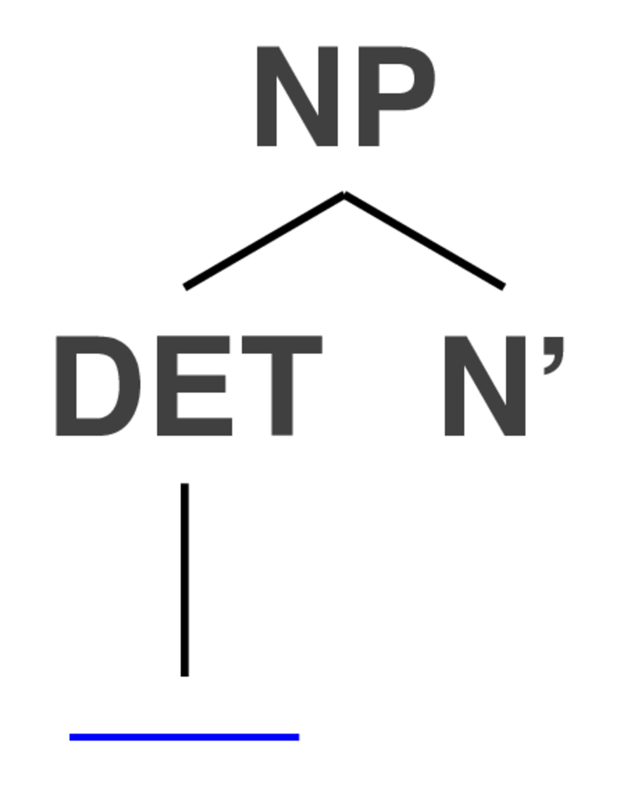
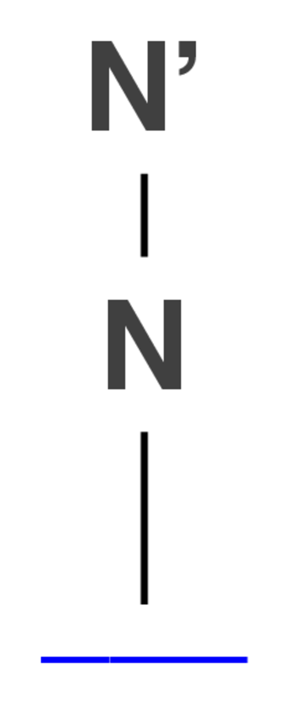
Rule 1) NP -> DET N’
Rule 3) N’ -> N
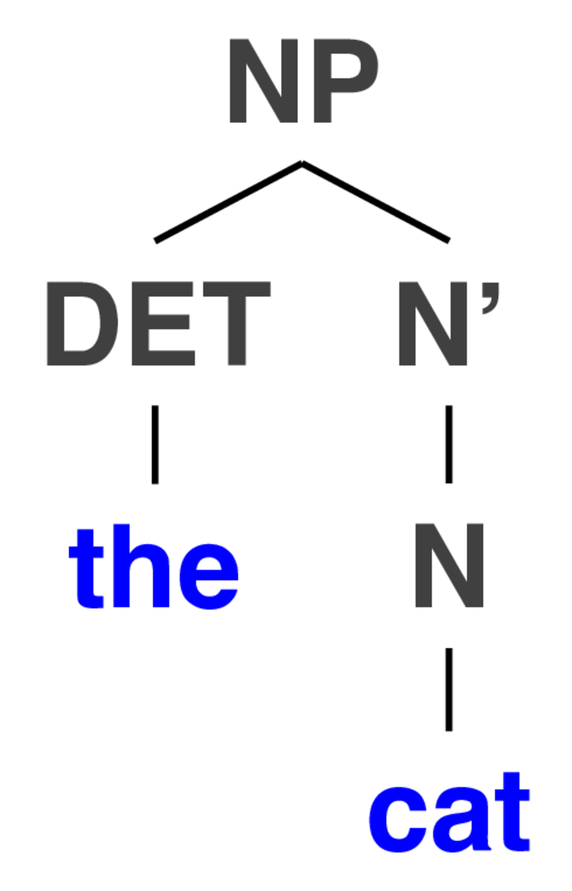
… but what if there’s no determiner?
Rule 2) NP -> N’
Rule 3) N’ -> N

Rule 2) NP -> N’
Rule 3) N’ -> N

Rule 2) NP -> N’
Rule 3) N’ -> N

How do we deal with
adjectives?
Rule 4) N’ -> ADJ N’
- We can combine Rule 1, Rule 4, and Rule 3…
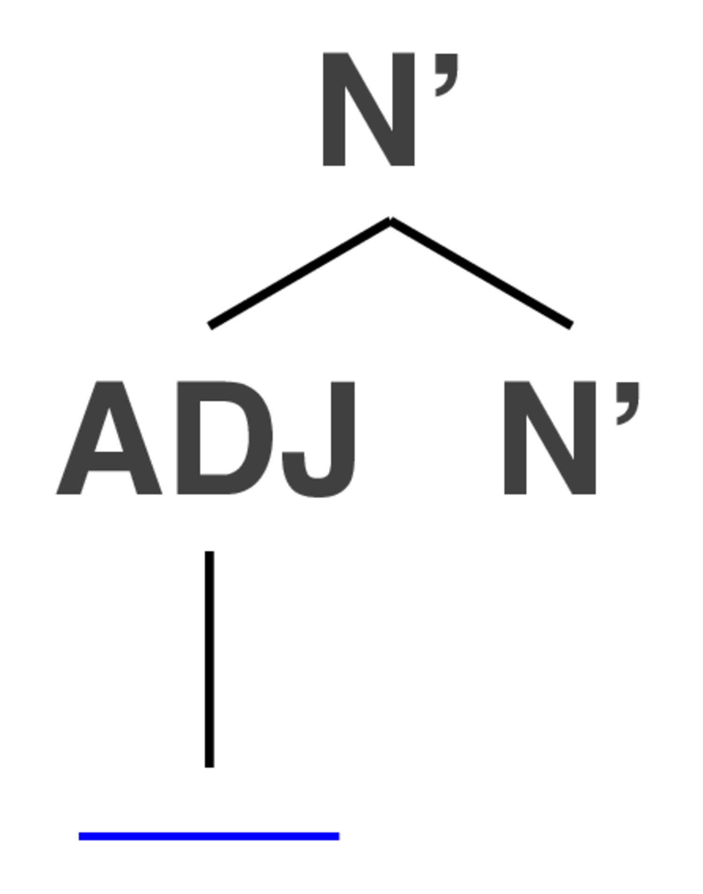
Rules 1, 3, 4
We can combine Rule 1, Rule 4, and Rule 3…

Rules 1, 3, 4
We can combine Rule 1, Rule 4, and Rule 3…

… Rule 4 is recursive!

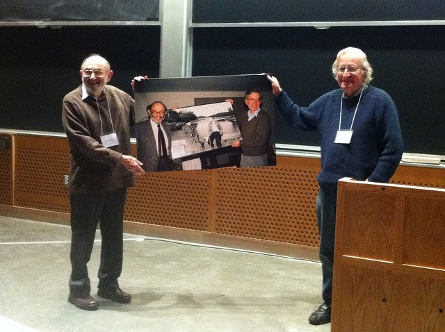
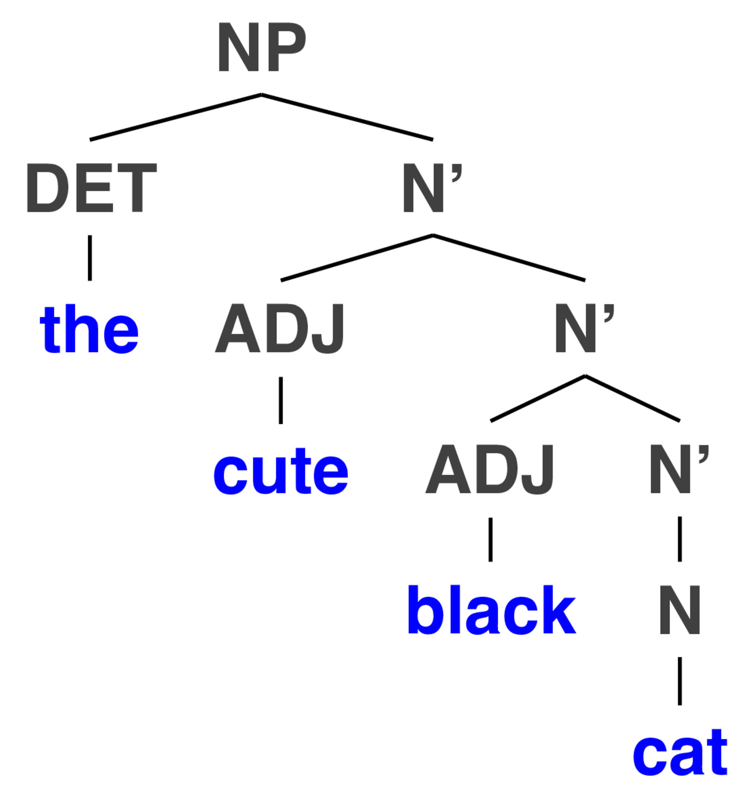


(… and so on)
What about
prepositions? Linguists love prepositions!
| ## Rule 5: NP -> NP PP ## Rule 6: PP -> P NP |

 |
Rules 5 and 6

“Two computational
linguists from San Diego”
“Two computational
linguists from San Diego”
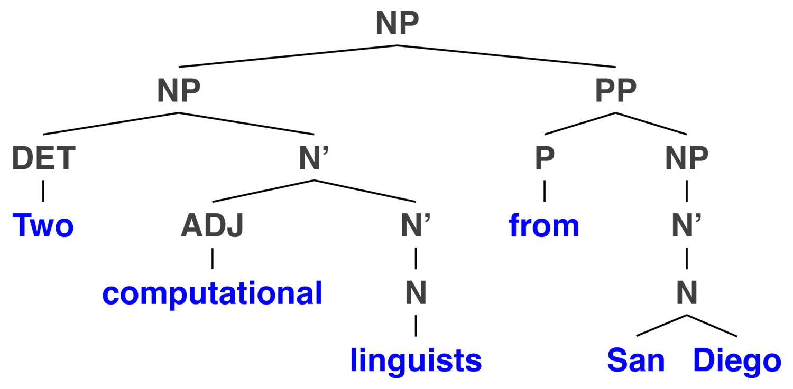
Now, let’s make a sentence!
Rule 7: S -> NP VP
Rule 8: VP -> V


Rules 2, 3, 7, 8

Rule 10: VP -> V PP
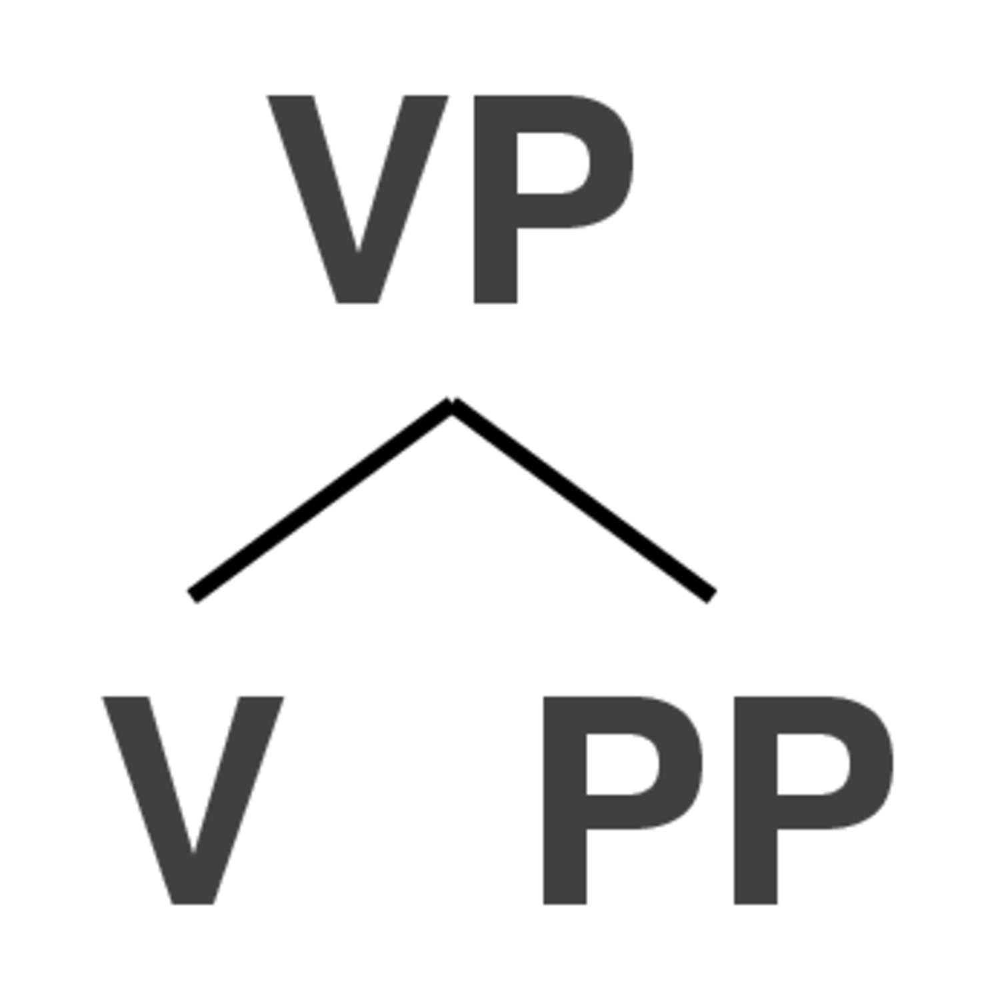
Rules 2, 3, 6, 7, 10
But
lots of verbs are transitive, and take a noun phrase as the
object
Rule 9: VP -> V NP
Rules 1, 2, 3, 7, 9

… and we can bring old rules
back in!

… and we can bring more
old rules back in!
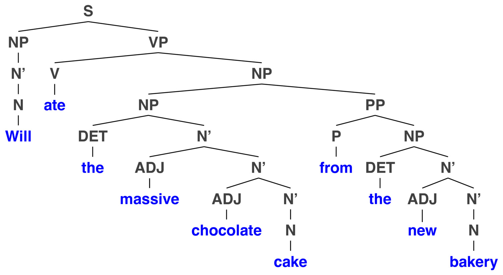
Maybe we want to modify the
verbing…
Rule 11: VP -> VP PP
This one’s recursive too!
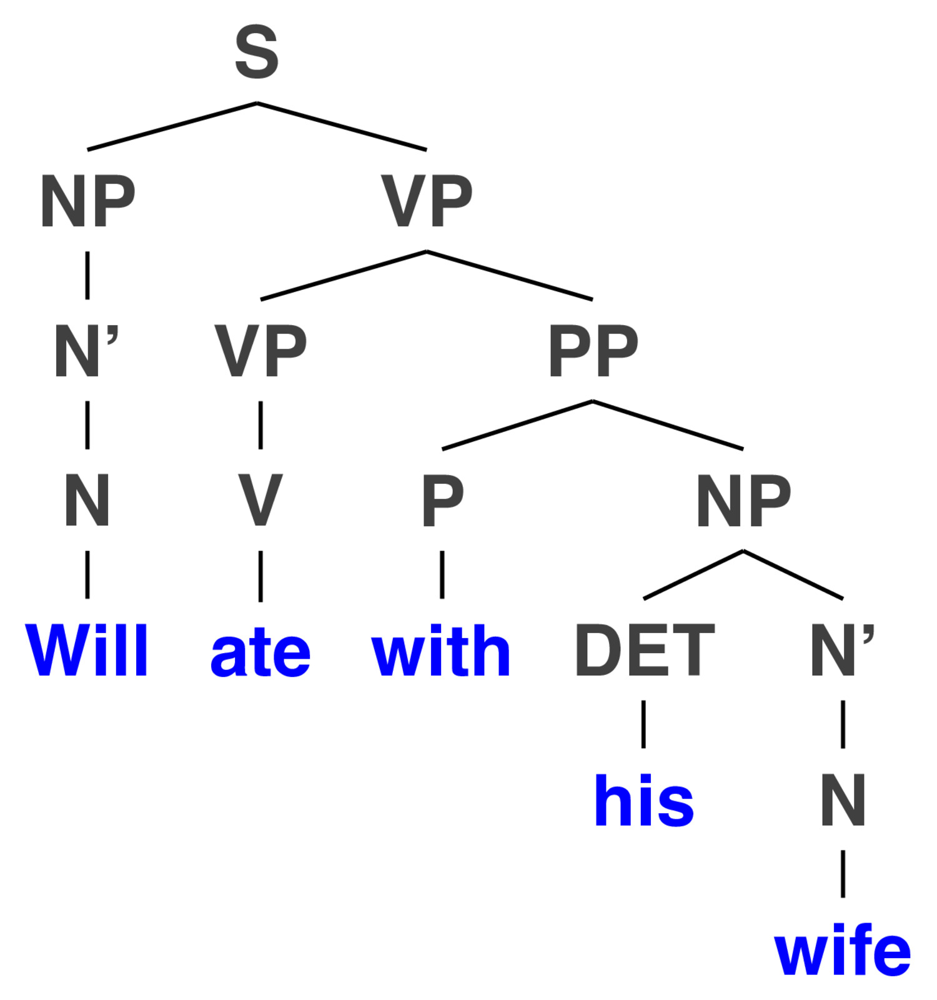
“Two
computational linguists from San Diego walked into a bar”
“Two
computational linguists from San Diego walked into a bar”
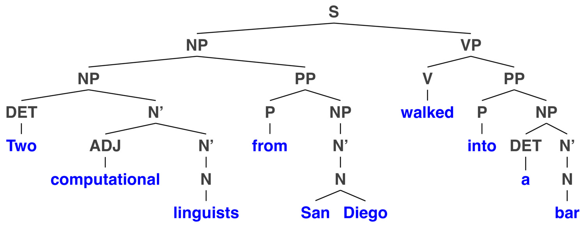
But this
works with all the stuff we’ve been doing…

Is this starting to feel
familiar?
Drawing
Syntax Trees is combining small elements to make bigger, fancier
trees
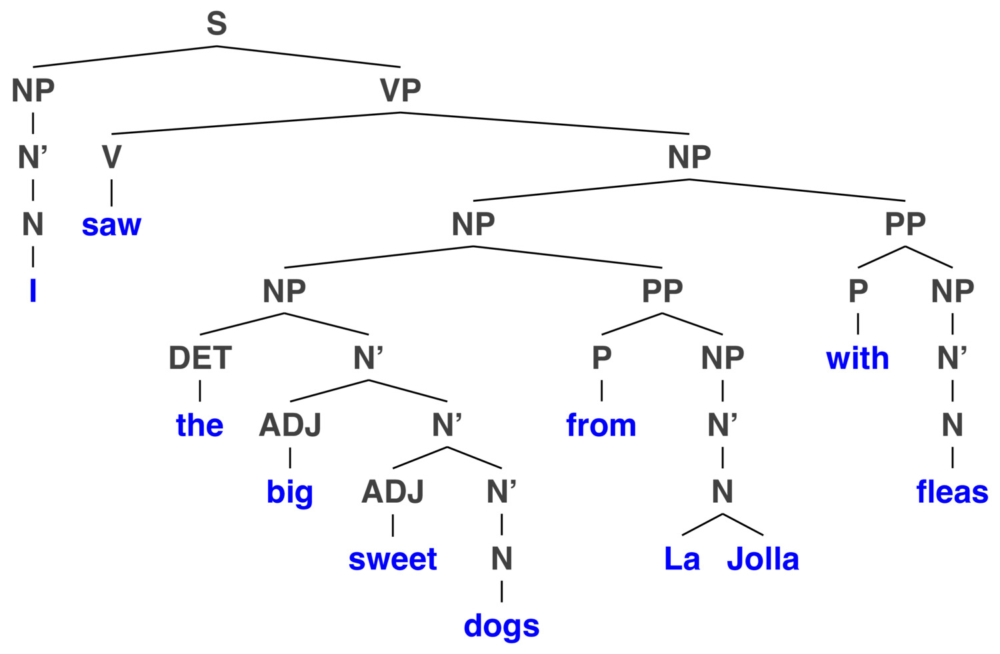

Complementizers
put sentences within sentences
- Words like “that”, “when”, “if”, “while”, “as”, and more
Rule 7: S -> NP VP
Rule 12: VP -> V CP
Rule 13: CP -> C S
| ### “That allows you to drop a whole new sentence in
there!!” |
 |
Rule 12: VP -> V CP
and Rule 13: CP -> C S

… we can go deeper

… and this
combines with everything we’ve been doing …

… and just keeps getting worse
…


(Don’t
worry, that last one was mostly just me having fun)
- You’ll be doing much simpler trees on tests and homeworks
Do not be tempted by
darkness
Where you attach
things changes the meaning!
Be careful
where you put your prepositional phrases!
There are multiple ‘legal’ places to attach a given prepositional
phrase
… but where you attach prepositional phrases changes the
meaning
Sometimes the difference is subtle, but often it isn’t!
You may think…

… but in reality …

Drawing Trees
| ### How do you draw phrase structure trees? |
| - Only Electronically! |
| - This makes for fewer scanning and legibility issues |
| - Pros tend to use LaTeX, but that’s fancy |
| - Or using a tool like http://ironcreek.net/phpsyntaxtree/ |
| - You’ll need to use bracket notation for that |
| - It’s frustrating at first, but it does the job |
| - This is a friendly tool https://groverburger.github.io/sapling/ |
[.S [.NP [.NP [.DET The ] [.N' [.ADJ proud ] [.N' [.N baker ] ] ] ] [.PP [.P from ] [.NP [.N' [.N San Bernadino ] ] ] ] ] [.VP [.V loved ] [.CP [.C that ] [.S [.NP [.N' [.N people ] ] ] [.VP [.V cheered ] [.CP [.C as ] [.S [.NP [.N' [.N Will ] ] ] [.VP [.VP [.V ate ] [.NP [.NP [.DET the ] [.N' [.ADJ massive ] [.N' [.ADJ chocolate ] [.N' [.N cake ] ] ] ] ] [.PP [.P from ][.NP [.DET the ] [.N' [.ADJ new ] [.N' [.N bakery ] ] ] ] ] ] ][.PP [.P with ] [.NP [.DET his ] [.N' [.N wife ] ] ] ] ] ] ] ] ] ] ] ]
I’ve
made a video tutorial for creating these trees using jsSyntaxTree
https://www.youtube.com/watch?v=yzr-MAMTK5k
“The grumpy polar bears from LA hated the excruciating traffic on the
405.”
“The
grumpy polar bears from LA hated the excruciating traffic on the
405.”
Let’s break it down!
The grumpy polar bears
- Rule 1 -> Rule 4 -> Rule 4 -> Rule 3

From LA
- Rule 6 -> Rule 2 -> Rule 3
The grumpy polar bears from
LA
- Combine the PP and NP using Rule 5
The excruciating traffic
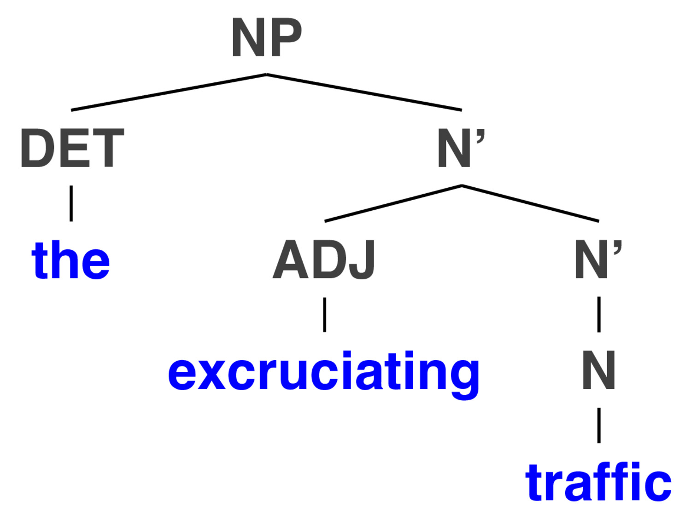
On the 405
- Rule 6 -> Rule 1 -> Rule 3
The excruciating traffic on
the 405
- Rule 5 to combine the two chunks
hated the
excruciating traffic on the 405
- A little bit of Rule 9’s all I need

“The
grumpy polar bears from LA hated the excruciating traffic on the
405.”

For Next Time
Thank you!